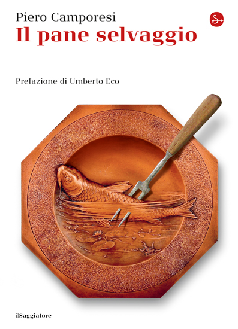
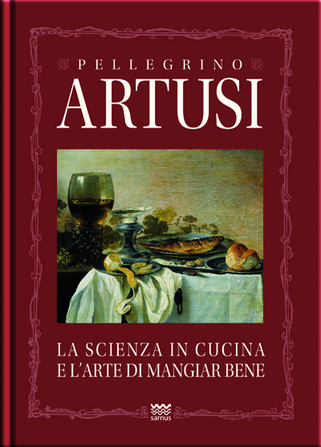
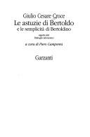
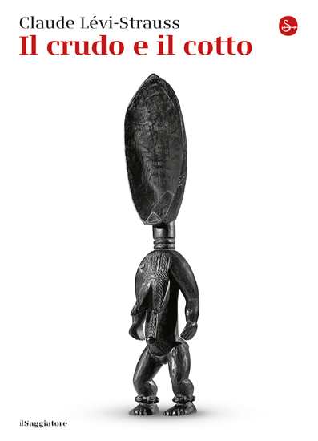
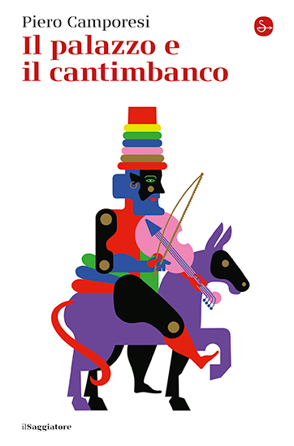
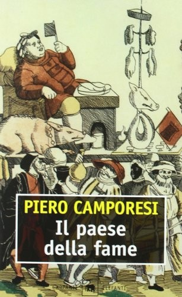
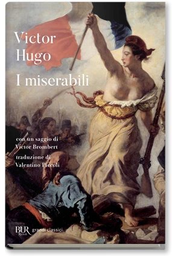
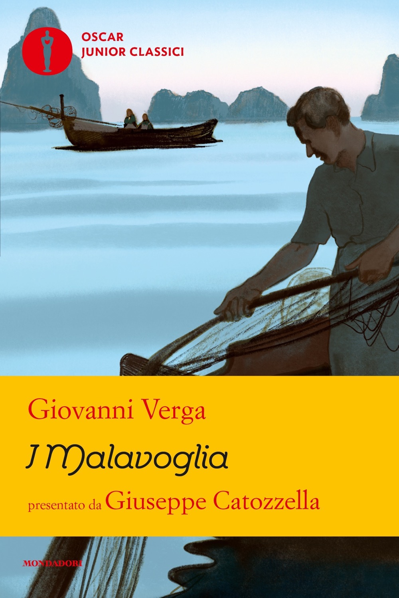
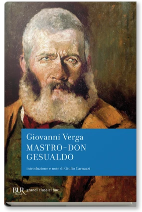
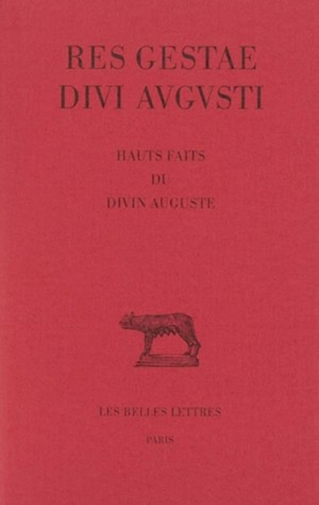

48:39 · 12 OPERE
La storia d'Italia sommersa e parallela.
Il filo del discorso
Piero Camporesi è al centro di un invito a leggere la storia italiana dalla parte delle persone comuni, dei poveri e delle culture che hanno lasciato tracce meno evidenti nei racconti del potere. Caldarella presenta Il pane selvaggio come uno strumento per entrare nelle condizioni materiali e negli immaginari della società preindustriale: fame, malattia, alimentazione e confini fra città e campagne. La curatela dell’Artusi e gli studi su Giulio Cesare Croce mostrano un lavoro nel quale filologia, storia e antropologia si incontrano. Una digressione sui romanzi di Dostoevskij, Hugo, Verga, Mastriani, Levi e Pennacchi amplia il confronto sulle rappresentazioni della povertà. Il passaggio decisivo riguarda gli strumenti con cui una cultura costruisce la propria immagine del mondo: il relatore applica al presente una distinzione che Camporesi sviluppa sul passato, criticando il consumo dei media e la perdita di autonomia. La scheda distingue questa applicazione polemica dalla ricerca originaria, senza attribuire a Camporesi giudizi sulla pandemia o sulla televisione contemporanea. Le note correggono titoli e date, contestualizzano le affermazioni sanitarie e precisano che una scarsa notorietà percepita non dimostra una cancellazione organizzata. Il filo conclusivo è la lettura come possibilità di riconoscere la complessità storica oltre le sole imprese dei governanti.
I libri nel discorso

Il pane selvaggio
Copertina: Il Saggiatore2016, ISBN9788842822394,224pagine nel catalogo editoriale, prefazione di Umberto Eco indicata sulla copertina. Prima uscita Il Mulino1980; seconda edizione riveduta e ampliata1983. La immagine non è della edizione Il Mulino mostrata o consigliata.
Ristampa Il Saggiatore2016, con prefazione di Eco. Non copertina della prima edizione1980 né prova della precisa stampa usata nel video.
Il pane selvaggio e1980espliciti; consigliata edizioneIlMulino, copertinaSaggiatore2016dichiarata.
Passaggio 11:42 ↗ · Fonti e libro ↗
La scienza in cucina e l’arte di mangiar bene
Copertina Sarnus, edizione diversa dalla curatela Camporesi: Copertina autentica del catalogo Sarnus, ISBN9788856300451,448pagine, presentazione Paolo Piazzesi. Il catalogo distingue uscita2010, ristampe2010e2022e seconda edizione2026; non viene attribuita una tiratura alla immagine senza colophon. Prima opera1891. La edizione Einaudi1970con introduzione e note di Piero Camporesi è diversa e non viene confusa con Sarnus.
Immagine del catalogo corrente Sarnus. Non copertina Einaudi1970e non contiene automaticamente la introduzione di Camporesi. Il candidato Einaudi ISBN9788806158859era privo di scritte leggibili ed è stato respinto.
Artusi1891e edizioneEinaudi curataCamporesi espliciti; immagineSarnusdi edizione diversa dichiarata.
Passaggio 12:05 ↗ · Fonti e libro ↗
Le astuzie di Bertoldo e le semplicità di Bertoldino
Frontespizio della raccolta Garzanti1993: Frontespizio, non copertina esterna, della edizione Garzanti1993curata da Piero Camporesi, Le mosche bianche,314pagine, ISBN8811660858; seguono i Dialoghi salomonici. Immagine128×196pixel, leggibile ma di risoluzione limitata. Distinta dalla edizione Einaudi1978.
Frontespizio autentico con autore, titolo, curatore e marchio Garzanti. Non copertina esterna. I due testi narrativi citati sono contenuti nello stesso volume.
Bertoldo, GiulioCesareCroce e successivamenteBertoldino espliciti, raccolta in un solo volume.
Passaggio 13:59 ↗ · Fonti e libro ↗
Il crudo e il cotto (Le cru et le cuit)
Copertina: Il Saggiatore2016, ISBN9788842822486. Il catalogo editoriale riporta479pagine; altri cataloghi commerciali496, dato non trasferito come identità della tiratura. Primo volume delle Mythologiques, originale francese1964, prima traduzione italiana1966. Copertina autentica della ristampa moderna.
Immagine autentica dell’opera, controllata visivamente; l’edizione di riferimento non è attribuita al filmato.
Lévi-Strauss e Il crudo e il cotto espliciti.
Passaggio 15:21 ↗ · Fonti e libro ↗
Il palazzo e il cantimbanco
Copertina: Il Saggiatore2023, ISBN9788842833383,184pagine. Copertina della ristampa editoriale, non della prima Garzanti1994. La copertina non è attribuita alla copia del relatore.
Immagine autentica dell’opera, controllata visivamente; l’edizione di riferimento non è attribuita al filmato.
Libro1994riconoscibile nel titolo deformato palazzo dei saltimbanchi; normalizzazione bibliografica.
Passaggio 16:32 ↗ · Fonti e libro ↗
Il paese della fame
Copertina: Garzanti2000, Gli elefanti.Saggi,279pagine, ISBN9788811676713. Copertina autentica della ristampa; prima pubblicazione Il Mulino1978,251pagine. Non si crea un libro inesistente intitolato Il pane della fame.
Immagine autentica dell’opera, controllata visivamente; l’edizione di riferimento non è attribuita al filmato.
Titolo deformato pane della fame e1978: identificazione da bibliografiaCamporesi.
Passaggio 16:40 ↗ · Fonti e libro ↗
I miserabili
Copertina: BUR / Rizzoli · 1998
Immagine autentica dell’opera, controllata visivamente; l’edizione di riferimento non è attribuita al filmato.
Hugo e Les Misérables1862espliciti.
Passaggio 26:25 ↗ · Fonti e libro ↗
I Malavoglia
Copertina: Mondadori, Oscar Junior Classici2020,352pagine, ISBN9788804725992, prefazione di Giuseppe Catozzella indicata in copertina. Prima pubblicazione1881; la immagine moderna non identifica la copia citata.
Immagine autentica dell’opera, controllata visivamente; l’edizione di riferimento non è attribuita al filmato.
Verga,I Malavoglia e1881espliciti.
Passaggio 27:00 ↗ · Fonti e libro ↗
Mastro-don Gesualdo
Copertina: BUR,7maggio2003,480pagine, ISBN9788817106962; introduzione e note Giulio Carnazzi indicate sulla copertina. Originale in rivista1888e in volume1889, con data1890sul frontespizio della prima stampa. Non1883. La copertina moderna è distinta dalla prima edizione.
Immagine autentica dell’opera, controllata visivamente; l’edizione di riferimento non è attribuita al filmato.
Verga,Mastro-donGesualdo esplicito; anno1883da correggere a1889pervolume.
Passaggio 27:08 ↗ · Fonti e libro ↗
Res gestae divi Augusti
Copertina di una edizione critica con traduzione francese: Les Belles Lettres2007, Collection des universités de France, Série latine386, ISBN9782251014463, testo stabilito e tradotto da John Scheid. Copertina del volume con testo latino, versione greca e traduzione/commento francese: non una edizione italiana. Opera composta e aggiornata in più fasi; diffusione epigrafica dopo la morte di Augusto14dC.
Edizione critica John Scheid,2007; non copertina di un libro antico né traduzione italiana.
Res gestae divi Augusti esplicito, datazioneantica nel parlato imprecisa.
Passaggio 28:50 ↗ · Fonti e libro ↗
Canale Mussolini
Copertina: Fotografia della copertina Mondadori collegata alla scheda del Premio Strega2010, titolo Canale Mussolini senza numero di seguito. È il primo romanzo, poi riproposto anche come Parte prima. Nessun ISBN desunto dalla sola immagine e nessuna tiratura attribuita al video.
Immagine autentica dell’opera, controllata visivamente; l’edizione di riferimento non è attribuita al filmato.
Pennacchi e Canale Mussolini espliciti.
Passaggio 29:49 ↗ · Fonti e libro ↗
Cristo si è fermato a Eboli
Copertina: Einaudi, Super ET, 2025, introduzione di Nicola Lagioia, 288 pagine; edizione di riferimento successiva al video.
Copertina autentica dell’edizione Einaudi 2025, con introduzione di Nicola Lagioia. È successiva alla discussione del 2021 e non viene attribuita alla copia eventualmente letta dal relatore.
CarloLevi e Cristo si è fermato a Eboli espliciti.
Passaggio 29:56 ↗ · Fonti e libro ↗Minutaggi ricavati da testi automatici, da riascoltare. Le identificazioni probabili sono segnalate accanto ai libri.